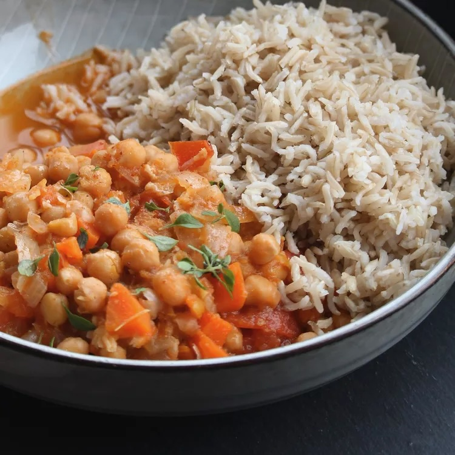

Chana Masala

Description
Savory vegan chickpea stew with Indian flavors. Cooking the rice inside in a "pot-in-pot" method gives you a complete meal without dirtying up the kitchen.
Ingredients
- 1 cup brown basmati rice
- 2 teaspoons cumin seeds
- 1 teaspoon amchur (dried mango powder)
- 1 teaspoon ground coriander
- 1 teaspoon garam masala
- 1 teaspoon paprika
- 1 teaspoon ground turmeric
- ½ teaspoon freshly ground black pepper
- ½ teaspoon cayenne pepper
- 1 cup dried chickpeas
- 2 cups water
- 1 tablespoon olive oil
- 1 onion, chopped
- 1 carrot, diced
- 1 bay leaf
- 1 clove garlic, minced
- 1 (1 inch) piece fresh ginger root, minced
- 1 green Thai chile, minced (Optional)
- 3 Roma tomatoes, diced
- 2 tablespoons tomato paste
- ½ cup cilantro, chopped
Steps
- Rinse rice in plenty of cold water. Put into a small, oven-safe dish that will fit inside a multi-functional pressure cooker (such as Instant Pot®). Cover with water and set aside.
- Combine cumin seeds, amchur, coriander, garam masala, paprika, turmeric, pepper, and ground cayenne in a small bowl for the spice mix. Set aside.
- Pour chickpeas into the cooker and cover with 2 cups cold water. Close and lock the lid. Select high pressure according to manufacturer's instructions; set timer for 10 minutes. Allow 10 to 15 minutes for pressure to build.
- Release pressure using the natural-release method according to manufacturer's instructions for 10 minutes. Manually release any remaining pressure, about 5 minutes. Unlock and remove the lid. Remove the chickpeas, reserving cooking liquid.
- Place oil in the pot and select Saute function. Add onion, carrot, and bay leaf; cook and stir until onion has softened and turned translucent, about 5 minutes. Stir in spice mix, garlic, ginger, Thai chile, and 1/4 cup of the reserved chickpea liquid; saute until fragrant, about 1 minute. Cancel Saute function.
- Mix in chickpeas and remaining liquid, tomatoes, and tomato paste. Place a trivet inside.
- Drain rice and return to the dish. Cover with 1 1/4 cups fresh water. Place the dish on top of the trivet. Close and lock the lid. Select high pressure according to manufacturer's instructions; set timer for 25 minutes. Allow 10 to 15 minutes for pressure to build.
- Release pressure using the natural-release method according to manufacturer's instructions for 10 minutes. Release any remaining pressure carefully using the quick-release method, about 5 minutes. Unlock and remove the lid.
- Carefully lift out the rice; fluff with a fork. Remove the trivet and bay leaf. Use an immersion blender to blend just a small amount of chickpeas to create a creamy texture, 2 to 3 pulses on high speed.
- Evenly distribute rice and chana masala among 5 plates. Top with chopped cilantro.